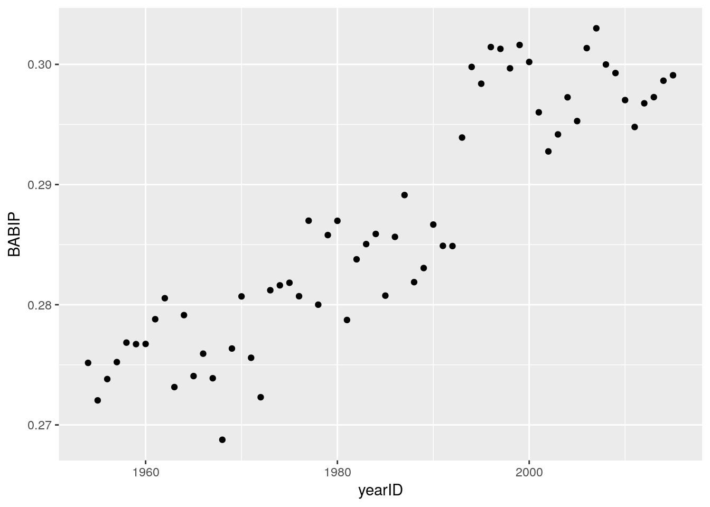

The podcast I listen to mentioned Justin Smoak’s poor career BABIP numbers and I wondered how this fits in with people with as many AB as he has.
library(Lahman)
library(dplyr)##
## Attaching package: 'dplyr'## The following objects are masked from 'package:stats':
##
## filter, lag## The following objects are masked from 'package:base':
##
## intersect, setdiff, setequal, unionlibrary(ggplot2)data("Batting")
Batting %>% group_by(yearID) %>%
summarize(BABIP = (sum(H, na.rm = T) - sum(HR, na.rm = T))/
(sum(AB, na.rm = T) - sum(SO, na.rm = T) - sum(HR, na.rm = T) + sum(SF, na.rm = T))) %>%
filter(yearID>1953) %>%
ggplot(aes(x = yearID, y = BABIP)) + geom_point()